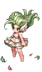
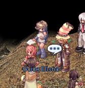
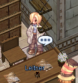
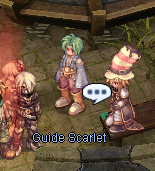
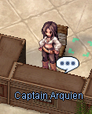
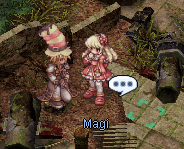

File list
Jump to navigation
Jump to search
This special page shows all uploaded files.
{kind=link}
{kind=link}
| Date | Name | Thumbnail | Size | User | Description | Versions |
|---|---|---|---|---|---|---|
| 13:59, 8 October 2018 | Vanil-e1.gif (file) | 9 KB | AloeLeaflet | 1 | ||
| 14:00, 8 October 2018 | Vanil-e2.gif (file) |  |
15 KB | AloeLeaflet | 1 | |
| 21:15, 17 November 2015 | Vanil.gif (file) | 3 KB | Adri | 1 | ||
| 14:00, 8 October 2018 | Vanil2.gif (file) |  |
3 KB | AloeLeaflet | 1 | |
| 15:55, 3 September 2015 | VanilEvoLv1.jpg (file) | 76 KB | Renata | 1 | ||
| 01:38, 9 November 2020 | Vanilmirth.gif (file) |  |
8 KB | Randomced859 | 1 | |
| 01:39, 9 November 2020 | Vanilmirth2.gif (file) |  |
8 KB | Randomced859 | 1 | |
| 01:35, 10 September 2015 | Vanilmirth Instruction Change.png (file) | 1 KB | AloeLeaflet | 1 | ||
| 01:39, 9 November 2020 | Vanilmirth h.gif (file) |  |
16 KB | Randomced859 | 1 | |
| 01:40, 9 November 2020 | Vanilmirth h2.gif (file) | 21 KB | Randomced859 | 1 | ||
| 03:09, 4 September 2015 | Vanils.png (file) |  |
6 KB | Renata | 1 | |
| 23:43, 16 September 2015 | Vanini.png (file) | 19 KB | AloeLeaflet | 1 | ||
| 13:26, 5 October 2016 | Varetyr Spear.png (file) |  |
419 bytes | Seandh | 1 | |
| 17:19, 5 September 2015 | Variant shoes.png (file) | 594 bytes | AloeLeaflet | 1 | ||
| 10:50, 19 February 2016 | Variantshoes.png (file) | 11 KB | Adri | 1 | ||
| 18:29, 4 January 2021 | Varmundt.png (file) |  |
7 KB | I Know To Write | 1 | |
| 10:39, 11 October 2019 | Ve fild02.gif (file) | 81 KB | Alice | 1 | ||
| 07:51, 27 July 2018 | Vellumenc.png (file) | 578 bytes | Colours | 1 | ||
| 04:38, 1 November 2016 | Venom Dust.png (file) |  |
1 KB | Sanoshi | 1 | |
| 22:46, 4 October 2016 | Venom Impression.png (file) |  |
3 KB | Inberun | 1 | |
| 18:38, 31 October 2016 | Venom Knife.png (file) | 517 bytes | Sanoshi | 1 | ||
| 00:55, 11 October 2016 | Venom Pressure.png (file) |  |
579 bytes | Ggboyz | 1 | |
| 04:39, 1 November 2016 | Venom Splasher.png (file) | 1 KB | Sanoshi | 1 | ||
| 04:32, 3 October 2016 | Venomimpress.png (file) |  |
536 bytes | Windrell | 1 | |
| 04:14, 3 October 2016 | Venompressure.png (file) |  |
594 bytes | Windrell | 1 | |
| 04:05, 7 October 2016 | Ventus 1.gif (file) |  |
3 KB | Seandh | 1 | |
| 04:06, 7 October 2016 | Ventus 2.gif (file) |  | 31 KB | Seandh | 1 | |
| 04:06, 7 October 2016 | Ventus 3.gif (file) |  |
37 KB | Seandh | 1 | |
| 03:09, 9 January 2021 | VeportaPet.png (file) |  |
2 KB | Randomced859 | 1 | |
| 14:00, 1 November 2016 | Verdure Trap.png (file) |  |
512 bytes | Ggboyz | 1 | |
| 03:52, 26 October 2020 | VeritPet.png (file) |  |
2 KB | Randomced859 | 1 | |
| 13:57, 23 November 2018 | Veritminorous1.png (file) | 24 KB | AloeLeaflet | 1 | ||
| 13:58, 23 November 2018 | Veritminorous2.png (file) | 21 KB | AloeLeaflet | 1 | ||
| 13:58, 23 November 2018 | Veritminorous3.png (file) |  |
20 KB | AloeLeaflet | 1 | |
| 03:10, 9 January 2021 | VerportePet.png (file) | 2 KB | Randomced859 | 1 | ||
| 15:39, 23 May 2016 | Verus 004.png (file) |  | 48 KB | Tokeiburu | 1 | |
| 15:39, 23 May 2016 | Verus 005.png (file) |  | 55 KB | Tokeiburu | 1 | |
| 15:39, 23 May 2016 | Verus 006.png (file) |  | 58 KB | Tokeiburu | 1 | |
| 15:54, 23 May 2016 | Verus 007.png (file) |  |
51 KB | Tokeiburu | 1 | |
| 15:54, 23 May 2016 | Verus 008.png (file) |  |
40 KB | Tokeiburu | 1 | |
| 15:54, 23 May 2016 | Verus 009.png (file) |  |
44 KB | Tokeiburu | 1 | |
| 15:21, 23 May 2016 | Verus 01.png (file) |  | 41 KB | Tokeiburu | 1 | |
| 15:54, 23 May 2016 | Verus 010.png (file) |  |
69 KB | Tokeiburu | 1 | |
| 15:54, 23 May 2016 | Verus 011.png (file) |  |
47 KB | Tokeiburu | 1 | |
| 15:54, 23 May 2016 | Verus 012.png (file) |  |
52 KB | Tokeiburu | 1 | |
| 15:54, 23 May 2016 | Verus 013.png (file) |  |
48 KB | Tokeiburu | 1 | |
| 15:54, 23 May 2016 | Verus 014.png (file) |  |
55 KB | Tokeiburu | 1 | |
| 15:54, 23 May 2016 | Verus 015.png (file) |  |
54 KB | Tokeiburu | 1 | |
| 15:54, 23 May 2016 | Verus 016.png (file) |  | 65 KB | Tokeiburu | 1 | |
| 19:12, 23 May 2016 | Verus 017.png (file) |  |
53 KB | Tokeiburu | 1 |
{kind=link}
{kind=link}
{kind=link}
{kind=link}
{kind=link}
{kind=link}
{kind=link}
{kind=link}
{kind=link}
{kind=link}
{kind=link}
{kind=link}
{kind=link}
{kind=link}
{kind=link}
{kind=link}